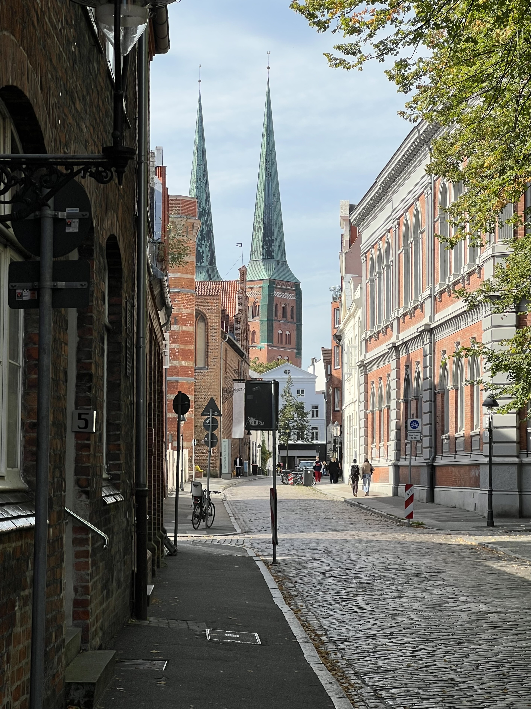
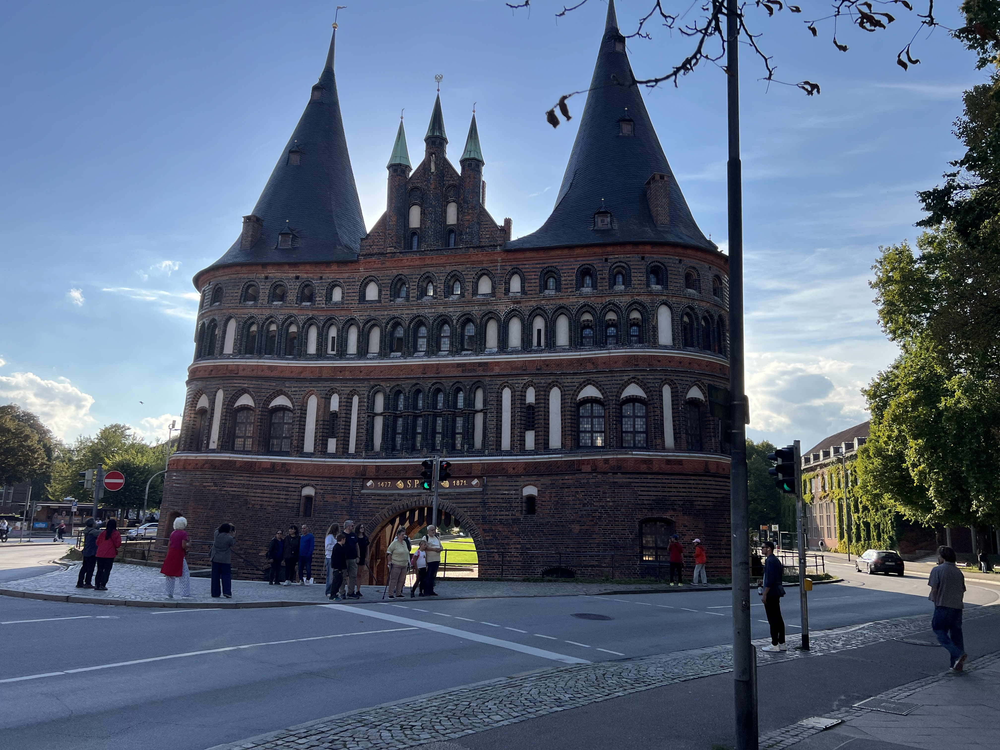
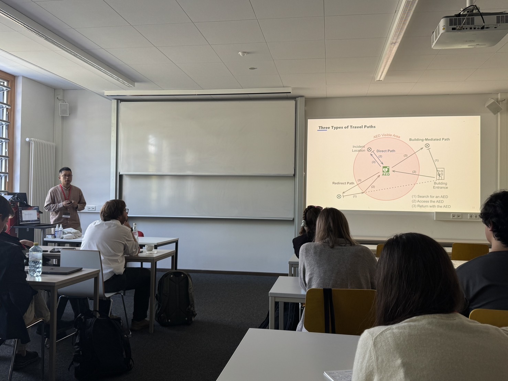

eCAADe 2026 に出席しました
投稿｜2026年09月29日 更新｜
eCAADe 2026（9/9～11）に出席しました．
ドイツにあるリューベックという都市で開催されました．
「ハンザの女王」と呼ばれるほど，交易で栄えた都市のようで，
中世の面影を残す美しい街並みが広がっていました．

リューベックの街並み

ホルステン門．リューベックの代名詞．
街の散策もほどほどに，学会での経験自体がとても充実したものになったと思います． 2本の発表を行ったので，準備がとても大変でしたが， 非常に温かい雰囲気の学会で，質問もたくさんしてもらえましたし， それがきっかけで，海外の研究者とコミュニケーションを取ることができました． 研究室をこの春に卒業した学生も，仕事が忙しいなか入念に準備をしてくれて， 発表，質疑応答が芯を喰ったものになっていて，非常に頼もしく感じました． 鹿島建設在籍時代にお世話になっていた先輩や，その恩師の先生とも出会えて， 国内外に知り合いを作れたことは，これからの財産になったと思います．

発表の様子
eCAADe は，建築教育とコンピュテーショナルデザインに関する国際的な学会であり， 毎年ヨーロッパの異なる都市で開催されています． 今回はじめて参加したのですが，とても刺激的な経験となりました． 一番驚いたのは，コンピューテーショナルな技術に関する実験，検証にとどまらず， それが実際の建築設計や施工に活かされていたり，もしくは，それらに役立つツールとして開発されていた点です． 実践的な応用が重視する姿勢には，わたしも学ぶべき点が多かったように感じています．
加えて印象的だったのは，建築分野に対するAI技術やLLMの応用が盛んであったにも関わらず， プレゼン資料は基本的に自分たちの手で作成されていた点です． 個人的な印象ですが，LLMまかせに作ったコンテンツは， 読んだり，聴講したりするうえで，印象に残らないまま流れていってしまいがちな感じがしています． そんななかで，eCAADe の参加者の多くと，発表資料を手作りしたときの”切欠”のようなものを大事にする意識を共有できたような気がして，勝手に嬉しくなりました．
日本からの参加者は，それほど多くはありませんでしたが， これから実績を作ろうという学生には，特におすすめできる学会です． アブストラクト審査と本文審査の二段構えの査読付きの学会で， 採択率は30%強ですが，アブストラクト審査を頑張れば，なんとかなりやすい印象を持ちました． 会期が決まっているので，採否が早めに分かるのも助かります．
わたしも，次回の参加に向けて準備を頑張ります． 複数いっぺんに投稿するのはしんどいので，1本にしようかな．